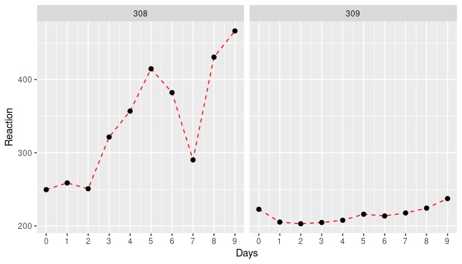
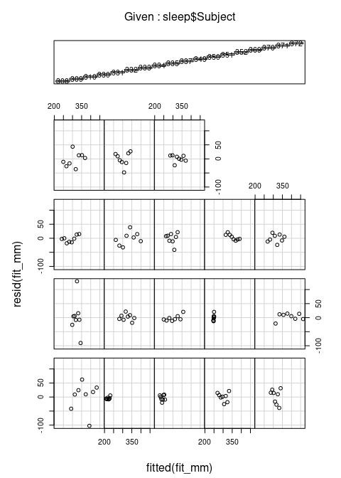

5 Mixed Effect Models (MEM)
One of the key assumptions of linear models is that the data is independent and identically distributed (i.i.d.). This means that our data sample is a true representation of the underlying population and that we have sampled without any (intentional or unintentional) bias. Sometimes this is not the case, however, meaning that there could be some systematic difference between some of our samples. We have come across a situation like this in the previous example, where samples taken during the rainy season showed a different pattern with temperature than those sampled during the off-season. We dealt with this by adding rainfall as a categorical variable into our model. This worked not only because there were only two possible levels for rainfall but also because we care about the identity of those levels, i.e. we wanted to estimate how incidence changes for rainfall = yes and rainfall = no. In other cases we might still want to account for underlying differences in our data by including a categorical variable we believe is having an influence but without caring about their identity. These variables are referred to random effect variables, as opposed to fixed effect variables that we considered so far. And models that include random and fixed effects are known as mixed effect models or random effect models.
- Fixed effects are (continuous or categorical) exploratory variables that we believe have an effect on the response and that we are interested in making conclusions about. Their effects is constant (fixed) across individuals.
- Random effects are categorical variables with many levels that are themselves drawn from a population of possible levels. Although they are believed to have an influence on the response, we are not interested in their identity.
Here we only briefly touch upon mixed effect models and how to analyse them in R using the lme4 package and by means of the sleepstudy dataset that is provided by lme4, which contains experimental data on the effect of sleep deprivation on reaction time. The data file has three variables
Reaction: average reaction time (ms)Days: number of days of sleep deprivationSubject: subject number on which observation was made
You can find out more about this study through the help function ?sleepstudy.
# load library for mixed effect modelling
library(lme4)
# get a summary of the sleep study dataset
summary(sleepstudy)## Reaction Days Subject
## Min. :194.3 Min. :0.0 308 : 10
## 1st Qu.:255.4 1st Qu.:2.0 309 : 10
## Median :288.7 Median :4.5 310 : 10
## Mean :298.5 Mean :4.5 330 : 10
## 3rd Qu.:336.8 3rd Qu.:7.0 331 : 10
## Max. :466.4 Max. :9.0 332 : 10
## (Other):120# get the number of study participants
print(paste0("Number of participants: ",length(unique(sleepstudy$Subject))))## [1] "Number of participants: 18"From the data summary we see that there were 10 observations made for 18 individuals. Therefore, Subject fits our definition of a *random effect`: we believe that there is a difference between study participants but we do not care about the individuals themselves.
We can convince ourselves about the difference between study participants by plotting the data for two subjects:
\(~\)
How do we model this data? There are principally three approaches: (1) pool all the data and don’t care about individual-level differences, (2) add Subject as a fixed effect as well as the interaction term Days:Subject, and (3) treat Subject as a random effect. Here we are only going to compare (1) and (3) and leave (2) as an exercise.
Before we start we need to make some minor modification to the data. First, we want to make sure that Subject is being treated like a categorical and not a continuous variable. Second, the first two days (day 0 and day 1) were for adaptation and training, meaning that sleep deprivation started counting at day 2 so we discard the first two days and then recode to make sure we start with day 0.
sleep <- sleepstudy %>%
mutate(Subject = factor(Subject)) %>%
mutate(Days = Days - 2) %>%
filter(Days>=0)lmer() function (from the lme4 package) uses a very similar syntax as the by now familiar lm() function but where the model formula now takes on the form
response ~ fixed1 + fixed2 + ... + (ran1 + ran2 + ...| ran_factor1) + ...
That is, fixed effects (and their interactions) are entered exactly as before. New is the presence of the term (ran1 + ran2 + ...| ran_factor1), which represents the random effects associated with a particular random factor. For our dataset there are three possibilities for how the random effects might influence the response, given here together with the specific formula syntax:
- random intercepts only:
Response ~ Days + (1 | Subject) - random slopes only:
Response ~ Days + (0 Days | Subject) - random slope and intersect:
Response ~ Days + (Days | Subject)
The most reasonable model would be the last, which allows for both the intercept and the slope to vary between individuals. So let’s fit this model
## Linear mixed model fit by REML ['lmerMod']
## Formula: Reaction ~ Days + (Days | Subject)
## Data: sleep
##
## REML criterion at convergence: 1404.1
##
## Scaled residuals:
## Min 1Q Median 3Q Max
## -4.0157 -0.3541 0.0069 0.4681 5.0732
##
## Random effects:
## Groups Name Variance Std.Dev. Corr
## Subject (Intercept) 958.35 30.957
## Days 45.78 6.766 0.18
## Residual 651.60 25.526
## Number of obs: 144, groups: Subject, 18
##
## Fixed effects:
## Estimate Std. Error t value
## (Intercept) 267.967 8.266 32.418
## Days 11.435 1.845 6.197
##
## Correlation of Fixed Effects:
## (Intr)
## Days -0.062The model summary now contains a lot more information. Let’s highlight the two most important sections.
Fixed effects
There are two fixed effects: (Intercept) and Days which tell us the average reaction time without any sleep deprivation and the increase in reaction time with each day of sleep deprivation. You will notice that compared to the simpler modelling framework, P values are not provided anymore, and there are various reasons as to why. However, if you wish to make statements regarding the statistical significance of these estimates, you can either look at the confidence intervals (based on parametric boostrapping)
## Computing profile confidence intervals ...## 2.5 % 97.5 %
## .sig01 19.0979934 46.3366599
## .sig02 -0.4051073 0.8058951
## .sig03 4.0079284 10.2487351
## .sigma 22.4666029 29.3494509
## (Intercept) 251.3443396 284.5904989
## Days 7.7245247 15.1463328The ones you are most interested in are the two bottom ones, and as neither crosses 0 you can be sure that the effects are statistically significant.
The other option is to calculate P values from the t values (the underlying maths goes beyon the scope of this workshop)
## (Intercept) Days
## 0.00000e+00 5.75197e-10This again provides strong evidence for rejecting the null hypotheses that sleep deprivation does not effect reaction time.
Random effects
This part of the summary looks more unfamiliar and explaining each part of this is beyond this workshop, as it requires more indepth knowledge about variance and covariance matrices and stats in general. So the only part you might want to take a look at is the Variance of the two Groups entries Subject and Residual. This tells you how much of the total variance in your data is being absorbed by the random effects (on slope and intercept). In this case this amounts to \(\sim 61\)% (100% * (958.35 + 45.78)/(958.35 + 45.78 + 651.60)), meaning that inter-subject variation explain the majority of the ‘noise’ in your data.
If we are interested in the estimated random effects, these can be pulled out using ranef() (similar to fixef() for accessing estimates of the fixed effects)
## $Subject
## (Intercept) Days
## 308 24.4992891 8.6020000
## 309 -59.3723102 -8.1277534
## 310 -39.4762764 -7.4292365
## 330 1.3500428 -2.3845976
## 331 18.4576169 -3.7477340
## 332 30.5270040 -4.8936899
## 333 13.3682027 0.2888639
## 334 -18.1583020 3.8436686
## 335 -16.9737887 -12.0702333
## 337 44.5850842 10.1760837
## 349 -26.6839022 2.1946699
## 350 -5.9657957 8.1758613
## 351 -5.5710355 -2.3718494
## 352 46.6347253 -0.5616377
## 369 0.9616395 1.7385130
## 370 -18.5216778 5.6317534
## 371 -7.3431320 0.2729282
## 372 17.6826159 0.6623897
##
## with conditional variances for "Subject"- Fit a linear regression model to the pooled data ignoring the effect of
Subjectand compare the estimated effect sizes. - Fit a linear regression model using
Subjectas a categorical fixed effect and compare the estimated effect sizes - Fit a mixed effect model as before but assume that
Subjectonly affects the intersect. How does this compare to the previous model with random slope and intersect?
5.1 Model checking
We need to be just as conscious of testing the assumptions of mixed effects models as we are with any other model. These assumptions include:
- Within-group errors are independent and normally distributed with mean zero and variance
- Within-group errors are independent of the random effects
- Random effects are normally distributed with mean zero
Two commonly used plots to check these assumptions are:
- A simple plot of residuals against fitted values, irrespective of random effects (note we have to do this “by hand” here):

- Plotting the residuals against the fitted values, separately for each level of the random effect, using the
coplot()function:
